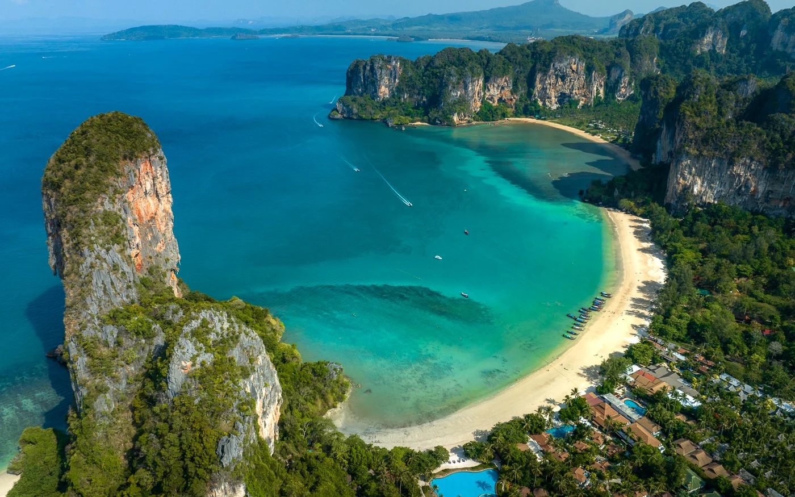
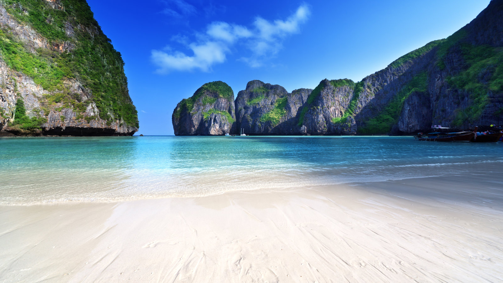
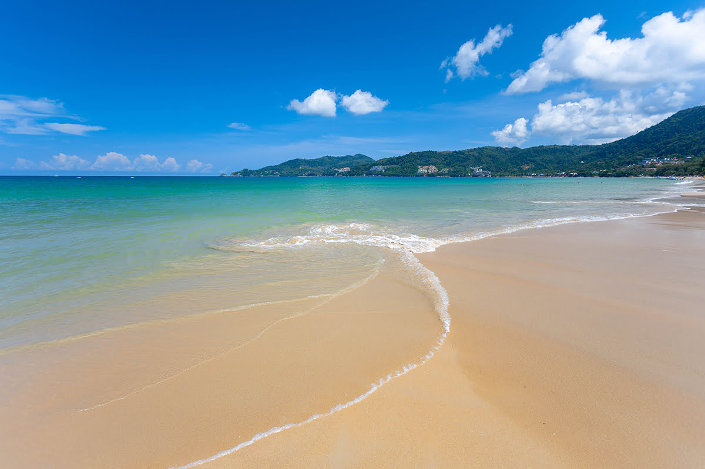

Tailandia es conocida por sus hermosas playas y aguas cristalinas. Aca te muestro algunas de sus mejores playas!!

RAILAY BEACH
Ubicada en la provincia de Krabi, en la costa de Andaman, Railay Beach es famosa por su espectacular paisaje de acantilados de piedra caliza. Es un destino popular para escalar, practicar kayak y disfrutar del sol y la arena blanca

PHIPHI ISLAND
Las Islas Phi Phi, especialmente Phi Phi Don y Phi Phi Leh, son famosas por sus playas paradisíacas y aguas turquesas. Maya Bay en Phi Phi Leh se hizo famosa por la película "The Beach". Aunque Maya Bay está actualmente cerrada para preservar el ecosistema, hay muchas otras playas impresionantes en la zona.

PATONG BEACH
Esta situada en la isla de Phuket, la playa de Patong es una de las más populares y animadas de Tailandia. Ofrece una amplia gama de actividades acuáticas, una vibrante vida nocturna y una gran cantidad de opciones de alojamiento y restaurantes.